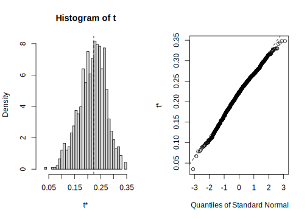

7.11 Bootstrap et régression multiple
Quand les données ne rencontrent pas les conditions d’application de normalité et d’homoscédasticité et que les transformations n’arrivent pas à corriger ces violations, le bootstrap peut être utilisé pour calculer des intervalles de confiance pour les coefficients. Si la distribution des coefficients bootstrappés est symétrique et approximativement normale, on peut utiliser les percentiles empiriques pour calculer les limites de confiance.
Le code qui suit, utilisant le package simpleboot, a été conçu pour être facilement modifiable et calcule les limites des IC à partir des percentiles empiriques.
############################################################
#######
# Bootstrap analysis the simple way with library simpleboot
# Define model to be bootstrapped and the data source used
mymodel <- lm(logherp ~ logarea + thtden + swamp + I(swamp^2), data = mydata)
# Set the number of bootstrap iterations
nboot<-1000
library(simpleboot)
# R is the number of bootstrap iterations
# Setting rows to FALSE indicates resampling of residuals
mysimpleboot <- lm.boot(mymodel, R = nboot, rows = FALSE)
# Extract bootstrap coefficients
myresults <- sapply(mysimpleboot$boot.list, function (x) x$coef)
# Transpose matrix so that lines are bootstrap iterations and columns are coefficients
tmyresults<-t(myresults)Vous pouvez ensuite faire des graphiques pour voir les résultats. Lorsque vous tournerez ce code, il y aura une pause pour vous permettre d’examiner la distribution pour chaque coefficient du modèle sur des graphiques:
# Plot histograms of bootstrapped coefficients
ncoefs <- length(data.frame(tmyresults))
par(mfrow = c(1, 2), mai = c(0.5, 0.5, 0.5, 0.5), ask = TRUE)
for (i in 1 : ncoefs) {
lab <- colnames(tmyresults)[i]
x <- tmyresults[,i]
plot(density(x),main=lab, xlab="")
abline(v=mymodel$coef[i], col = "red")
abline(v=quantile(x, c(0.025, 0.975)))
hist(x, main=lab, xlab="")
abline(v=quantile(x, c(0.025, 0.975)))
abline(v=mymodel$coef[i], col = "red")
}
Figure 7.8: Distribution des estimé par bootstrap pour logarea
Le graphique de droite illustre la densité lissée (kernel density) et celui de gauche est l’histogramme des estimés bootstrap du coefficient. La ligne rouge sur le graphique indique la valeur du coefficient ordinaire (pas bootstrap) et les deux lignes verticales noires marquent les limites de l’intervalle de confiance à 95%. Ici l’IC ne contient pas 0, et donc on peut conclure que l’effet de logarea sur logherp est significativement positif.
Les limites précises peuvent être obtenues par:
# Display empirical bootstrap quantiles (not corrected for bias)
p <- c(0.005,0.01, 0.025, 0.05, 0.95, 0.975, 0.99, 0.995)
apply(tmyresults, 2, quantile, p)## (Intercept) logarea thtden swamp I(swamp^2)
## 0.5% -0.76194862 0.1320241 -0.047185726 0.01747231 -0.0003491689
## 1% -0.72134751 0.1394888 -0.045450781 0.01787405 -0.0003451221
## 2.5% -0.63673612 0.1540597 -0.042416052 0.01931209 -0.0003294046
## 5% -0.60155837 0.1635555 -0.040565474 0.02059652 -0.0003132794
## 95% -0.06426922 0.2816842 -0.012131348 0.03771301 -0.0001786688
## 97.5% -0.01304071 0.2897949 -0.009633581 0.03949879 -0.0001624408
## 99% 0.03861090 0.3040886 -0.006270961 0.04134838 -0.0001545501
## 99.5% 0.05696576 0.3085783 -0.003582378 0.04301200 -0.0001488165Ces intervalles de confiances ne sont pas fiables si la distribution des estimés bootstrap n’est pas Gaussienne. Dans ce cas, il vaut mieux calculer des coefficients non-biaisés (bias-corrected accelerated confidence limits, BCa):
################################################
# Bootstrap analysis in multiple regression with BCa confidence intervals
# Preferable when parameter distribution is far from normal
# Bootstrap 95% BCa CI for regression coefficients
library(boot)
# function to obtain regression coefficients for each iteration
bs <- function(formula, data, indices) {
d <- data[indices,] # allows boot to select sample
fit <- lm(formula, data=d)
return(coef(fit))
}
# bootstrapping with 1000 replications
results <- boot(data = mydata, statistic = bs, R = 1000,
formula = logherp ~ logarea + thtden + swamp + I(swamp^2))
# view resultsPour obtenir les résultats, le code suivant va produire le graphique standard pour chaque coefficient, et les estimés BCa pour l’intervalle de confiance
plot(results, index=1) # intercept
plot(results, index=2) # logarea
plot(results, index=3) # thtden
plot(results, index=4) # swamp
plot(results, index=5) # swamp^2
# get 95% confidence intervals
boot.ci(results, type="bca", index=1)
boot.ci(results, type="bca", index=2)
boot.ci(results, type="bca", index=3)
boot.ci(results, type="bca", index=4)
boot.ci(results, type="bca", index=5)Pour logarea, cela donne:
## BOOTSTRAP CONFIDENCE INTERVAL CALCULATIONS
## Based on 1000 bootstrap replicates
##
## CALL :
## boot.ci(boot.out = results, type = "bca", index = 2)
##
## Intervals :
## Level BCa
## 95% ( 0.1221, 0.3205 )
## Calculations and Intervals on Original Scale
Notez que l’intervalle BCa va de 0.12 à 0.32, alors que l’intervalle standard était de 0.16 à 0.29. L’intervalle BCa est ici plus grand du côté inférieur et plus petit du côté supérieur comme il se doit compte tenu de la distribution non-Gaussienne et asymétrique des estimés bootstrap.